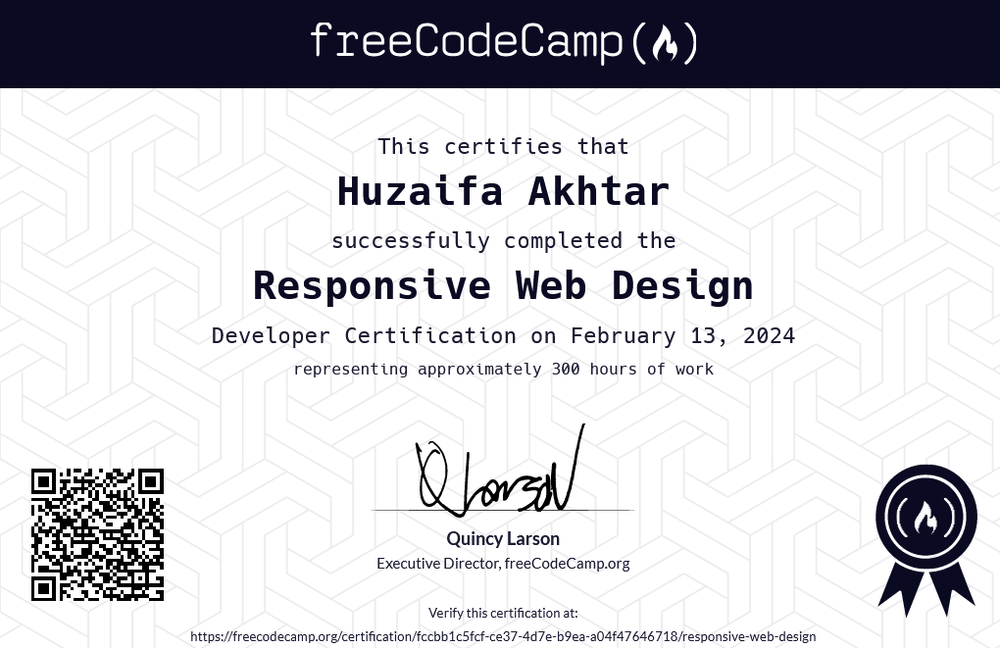
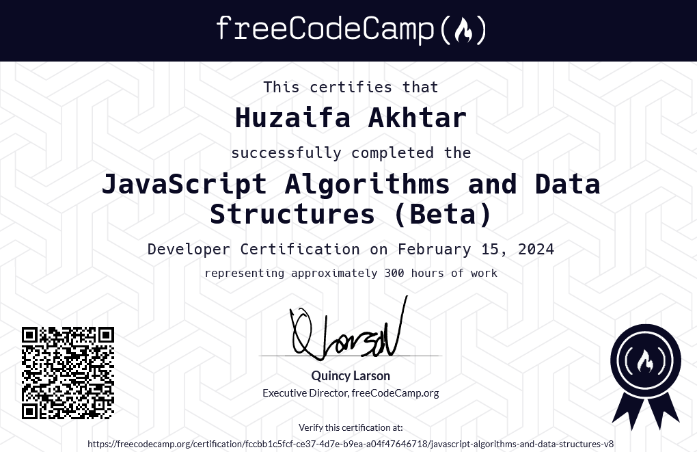

Huzaifa Akhtar
🚀 Front-end Developer
I like making websites and uploading them on the internet
📜 About Me
Introduction and Passion for Website Development
Hi, I’m Huzaifa Akhtar, a 16-year-old tech enthusiast and aspiring front-end developer with a deep curiosity for all things digital. I’ve been honing my skills in HTML and CSS, with a growing passion for JavaScript and modern frameworks like React and Next.js. Building visually stunning and interactive web experiences is not just a hobby but a mission I actively pursue. I’m currently focused on developing sleek and user-friendly interfaces while experimenting with new design concepts like smooth transitions, glitch effects, and responsive layouts. As someone who is passionate about creativity and code, I strive to turn ideas into functional, engaging digital realities.
Gaming Enthusiast and Explorer
When I’m not coding, you’ll often find me diving into virtual worlds in games like Minecraft, Genshin Impact, and Valorant. Gaming is more than just a pastime for me—it’s a way to explore creativity, problem-solving, and teamwork in dynamic environments. I enjoy the thrill of strategy, the camaraderie of team play, and the opportunity to immerse myself in beautifully designed worlds. These experiences not only inspire my creativity but also motivate me to incorporate elements of interactivity and engagement into my web development projects. Whether it's crafting intricate builds in Minecraft or strategizing in Valorant, gaming fuels my imagination and sparks new ideas.
Lifelong Learner and Chess Enthusiast
Beyond coding and gaming, I enjoy challenging my mind with chess, a game that sharpens my strategic thinking and decision-making skills. Chess teaches me patience, foresight, and adaptability—qualities that I bring to every aspect of my life, especially in problem-solving as a developer. I’m also a lifelong learner, always eager to explore new programming languages like C and enhance my existing skills, such as improving my typing speed and accuracy. These pursuits reflect my dedication to personal and professional growth, as I continually strive to expand my knowledge and evolve in everything I do.
✨ Projects
I have demonstrated a keen interest in web development through several projects hosted on my Github profile. Notably, I have worked on a Fiverr Clone, showcasing my ability to replicate complex web platforms using HTML and CSS. Additionally, my Portfolio project reflects my dedication to creating personal branding tools, emphasizing my skills in web design. Another intriguing project is the Animated Cup of Tea, which highlights my creativity and proficiency in CSS animations. These projects collectively illustrate my commitment to honing front-end development skills and my enthusiasm for bringing dynamic web designs to life.
🏆 Accomplishments
At just 16 years old, I have embarked on a journey to become a full-stack developer, focusing on web development and design. I am actively learning JavaScript, responsive CSS, and front-end libraries, aiming to enhance my development toolkit. My proactive approach to learning is evident through my engagement with platforms like CodePen, where I share my projects and experiment with new technologies. My dedication to continuous learning and my ability to apply newfound knowledge to practical projects underscore my potential as an emerging developer in the tech community.
The best way out is always through
-Robert Frost
🏅 Certificates
 📫 Feel Free to Drop a Message
📎 Connect With Me
Follow me on Social Media
Contact Me
Email: huzaifaakh@outlook.com
My Socials: solo.to/huzaifaakhtar
Phone: (+92) 348 5113 656
Discord: iamhuzaifa_akhtar
© All rights reserved 2025